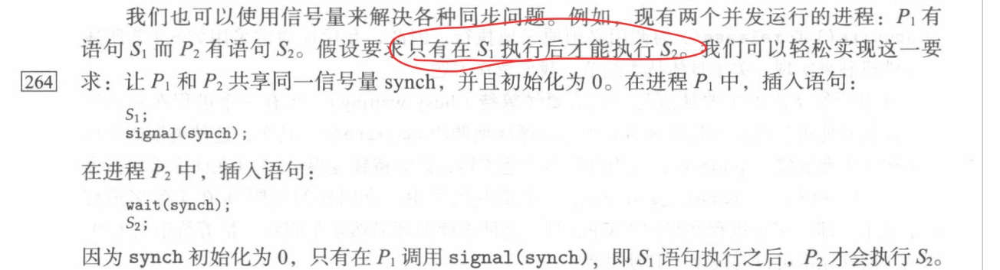

The Critical-Section Problem
About Critical Section
An atomic action is required in a critical section.
When one process is executing in its critical section, no other process is to be allowed to execute in its critical section.
The critical section is not a public section. Each process has its own critical section.
- Each process must request permission to enter its critical section. The section of code implementing this request is the entry section, the critical section may be followed by an exit section

Solution of the critical-section problem
Mutual exclusion 互斥
- If process $p_i$ is executing its critical section, then no other process can be executing in their critical sections
progress 进步？
- If no process is executing in its critical section and some processes with to enter their critical sections, then only those processes that are not executing in their remainder sections can participate in deciding which will enter its critical section next, and this selection cannot be postponed indefinitely.
- 如果没有进程在执行临界区并且某些进程想要执行他们的临界区，那么只有那些不在他们剩余区的进程可以参与决定谁来执行临界区的筛选，这个选择过程不会无限期推迟。
Bounded waiting 有界等待
There exists a bound on the number of times that other processes are allowed to enter their critical sections after a process has made a request to enter its critical section and before that request is granted.
gantt section Figure1 请求进入临界区 :des1, 1d 等待 :des2, after des1, 3d 被授权进入临界区 :des3, after des2, 5d如上图，在等待的过程中其他进程被允许进入临界区的次数是有限的
Algorithms
两个进程的同步算法，软件实现
1 | // initicall turn = 0 |
Satisfies mutual exclusion, but not progress
机械的规定零号进程一号进程交替进行。
进程是否有进入临界区的 意愿 ？
1 | //initial flag[0] = flag[1] = false; |
不满足 progress ，在flag[i] = true之后，切换到另一个进程flag[j] = true，此时两个进程都想进临界区，但是都在看对方，都不能进入临界区
Peterson‘s Solution
1 | //share turn flag[2] |
最后执行turn等于谁，谁就进入临界区
Synchronization Hardware
Based on locking
- Uniprocessors
- 同一时刻指运行一个进程
- disable interrupts 把中断屏蔽即可
- special atomic hardware instructions 硬件提供特殊的原子指令
- 原子指令执行期间不允许切换
test memory查看某内存单元的值set value对某内存单元设置为1swap交换两个内存单元的值
1 | do { |
test_and_set Instruction
做成一条机器指令
1 | //tar 看作一个锁，一堆人去抢这把锁 |
使用这条指令加锁1
2
3
4
5
6
7
8
9
10
11//mutux lock
//锁只是一个普通变量
do {
while(test_and_set(&lock));
//do something
//critical section
lock = false; //释放锁
//remainder section
} while (1);
//比较倒霉的情况可能不满足有界等待
//几率小，当倒霉处理
compare_and_swap Instruction
和test_and_set Instruction做一样的事情，但是实际功能更强。
用牛刀杀鸡
1 | int compare_and_swap(int *value, int expected, int new_value) { |
1 | do { |
Mutex Lock
Software Tool
使用原子的acquire()和release()来申请、释放锁，不需要在意底层具体实现方式。
CPU busy waiting 问题
- 循环查看锁开没开
- Spinlock 自旋锁
- 会浪费CPU的时间
更好的办法
- 锁可用获得锁
- 锁不可用进程挂起
- 释放锁时有进程挂起则挑一个唤醒
- 没有进程挂起直接释放
Semaphore
信号量
Synchronization Tool that does not require busy waiting
is an integer
wait()P 减信号量 请求执行1
2
3
4
5wait(S) {
while (S <= 0);
//busy wait
S--;
}
signal()V 加信号量1
2
3signal(S) {
S++;
}
Usage
某个资源的只能被有限的人使用，例如为了保证网络通畅，只允许五个人连接。
不局限于加锁解锁，可以有一定范围。
当信号量被限制到二元，则退化（？）为互斥锁。
生产者 / 消费者问题？
有界缓冲区问题？
哲学家就餐问题？如何把这些搞哲学的饿死。
一个使用信号量解决问题的例子
